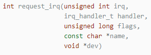
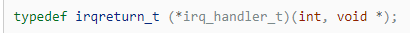
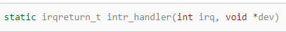

Veljko Petrović
Mart, 2024
Atomic_region.get() klase Position obrazuje
atomski region.set() poziva samo iz obrada prekida,
njeno telo po definiciji obrazuje atomski region (jer su prekidi
onemogućeni u toku obrade prekida, barem kod nas), pa je tako osigurana
međusobna isključivost operacija klase Position.DriverDriver.static, da bi se mogla koristiti
njena adresa.Driverstart_interrupt_handling() klase
Driver omogućuje smeštanje adrese obrađivača prekida u
tabelu prekida.


Event i DriverDriver ima kao povezanu klasu
Eventsignal metoda
expect metoda
Timer_driver.hour, minute i
second sadrže broj proteklih sati, minuta i sekundi.Timer_driver.TIMER (broj vektora prekida dodatnog sata), smesti adresu
njene operacije interrupt_handler(), koja je zadužena za
periodičnu izmenu sadržaja polja hour, minute
i second, sa periodom od jedne sekunde.Timer_driver sadrži i operacije
set() i get() za zadavanje i preuzimanje
sadržaja njenih polja.Timer_driverTimer_driverTimer_driverTimer_driverTimer_driverSleep_driverDriver ilustruje i primer drajvera koji
omogućuje uspavljivanje jedne niti dok ne protekne zadani broj otkucaja
sata.Sleep_driver.simple_sleep_for() omogućuje jednoj
niti da zaustavi svoju aktivnost dok se ne desi zadani broj otkucaja
sata.interrupt_handler()) je da odbroji zadani broj otkucaja
sata i da nakon toga signalizira da je moguć nastavak aktivnosti
uspavane niti.Display_driver sadrži drajver ekrana koji
upravlja kontrolerom ekrana.display_controller) sadrži
registar stanja (display_controller.status_reg) i registar
podataka (display_controller.data_reg).DISPLAY_READY.DISPLAY_BUSY.DISPLAY_READY (podrazumeva se da se ova vrednost
nalazi u registru stanja na početku rada kontrolera ekrana).DISPLAY_BUSY, zaustavlja aktivnost niti.displayed_char klase Display_driver.character_put() i interrupt_handler() klase
Display_driver.DISPLAY.Keyboard_driver sadrži drajver tastature koji
upravlja kontrolerom tastature.keyboard_controller)
sadrži registar podataka
(keyboard_controller.data_reg).Keyboard_driver.count određuje popunjenost ovog
bafera.first_full i
first_empty klase Keyboard_driver.pressed klase Keyboard_driver.character_get() i interrrupt_handler() klase
Keyboard_driver.KEYBOARD.Terminal_out omogućuje znakovni izlaz, odnosno
prikaz znaknova na ekranu.%6d, %6u, %11d i
%11u određuju broj cifara u decimalnom formatu u kome se
prikazuju cifre celih označenih (d) i neoznačenih (u) brojeva, a oznaka
%.3e određuje broj cifara iza decimalne tačke u decimalnom
formatu u kome se prikazuju cifre razlomljenih brojeva.string_put() klase Terminal_out, koja se brine
i o zaključavanju ekrana.Terminal_outTerminal_outTerminal_outTerminal_outstatic const char* UNSIGNED_SHORT_FORMAT = "%6u";
static const char* INT_FORMAT = "%11d";
static const char* UNSIGNED_FORMAT = "%11u";
static const char* DOUBLE_FORMAT = "% .3e";
static const int SHORT_SIGNIFICANT_FIGURES_COUNT = 5;
static const int INT_SIGNIFICANT_FIGURES_COUNT = 10;
static const int DOUBLE_SIGNIFICANT_FIGURES_COUNT = 10;Terminal_outTerminal_outTerminal_outTerminal_outTerminal_outTerminal_outTerminal_outTerminal_outTerminal_outTerminal_outTerminal_outTerminal_outstring_get(), kao i zaključavanje ekrana, radi
eha znakova, preuzetih u ovoj operaciji.string_get() poziva operaciju
edit() klase Terminal_in koja je zadužena za
eho znakova na ekranu i njihovo primitivno editiranje.Terminal_in koriste operaciju
string_get() za preuzimanje nizova znakova koji odgovaraju
raznim tipovima podataka.Terminal_inTerminal_inTerminal_inTerminal_inTerminal_inTerminal_inTerminal_inTerminal_inTerminal_inTerminal_inTerminal_inTerminal_inTerminal_inTerminal_inTerminal_inTerminal_inDisk_driverDisk_driver sadrži drajver diska koji upravlja
DMA kontrolerom diska.disk_controller) sadrži:
disk_controller.block_reg)disk_controller.buffer_reg)disk_controller.operation_reg)disk_controller.status_reg).Disk_driverDISK_READ ili
DISK_WRITEDISK_STARTEDDisk_driverDisk_driver. Opisano ponašanje drajvera diska ostvaruju
operacije block_transfer() i
interrupt_handler() klase Disk_driver.DISK.Disk_driverDisk_driverDisk_driverDisk_driverDisk_driverDisk_driverDisk opisuje rukovanje virtuelnim
(magneto-rotacionim) diskom.block_get() i
block_put() koje omogućuju preuzimanje bloka sa diska i
smeštanje bloka na disk.condition_variable (proširenje klase).wait().first(), next() i
last() klase condition_variable.first() omogućuje pozicioniranje pre prvog
deskriptora u listi uslova.next() omogućuje pozicioniranje pre narednog
ili iza poslednjeg deskriptora u listi uslova.last() omogućuje pozicioniranje iza
poslednjeg deskriptora u listi uslova.notify_one() klase
condition_variable uvek izvezuje deskriptor sa početka
liste uslova.optimize() klase Disk.FREE), poziv operacije
optimize() dovodi do poziva blokirajuće operacije
disk_driver.block_transfer().BUSY), a aktivnost pozivajuće niti je
zaustavljena.optimize(), njihova aktivnost se zaustavlja, a njihovi
deskriptori se uvezuju u jednu od dve liste uslova, koje odgovaraju
polju q klase Disk.index ove klase indeksira ili listu uslova
namenjenu za deskriptore niti koje čitaju blokove između trenutnog
položaja glave diska i njegovog oboda ili listu uslova namenjenu za
deskriptore niti koje čitaju blokove između centra rotacije ploče diska
i trenutnog položaja njegove glave.boundary klase
Disk.index može imati vrednost 0 ili 1.DiskDiskDiskDiskDiskDiskDiskDiskDiskDisk